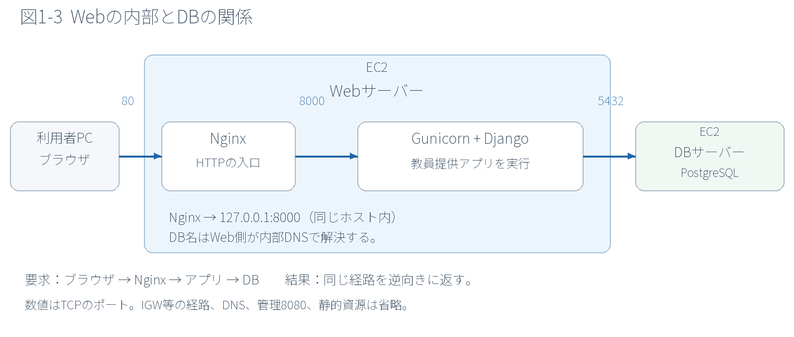

第1章 Webシステムを構成するもの
対応：P0/M0の共通準備。P1〜P6とM1〜M6を進めるための全体像。
この授業で作るシステム
今回は、学校の中で使う備品管理システムを作ることを想定する。学校にあるパソコン、モニター、ルーターなどについて、名前、数量、置き場所を管理するシステムである。利用者はブラウザで備品の一覧を見て、管理担当者は管理画面から備品を登録・変更する。
ただし、この授業ではアプリそのもののプログラミングは行わない。備品を一覧表示したり、登録・変更したりするアプリは教員が用意する。学生は、そのアプリを動かすためのコンピューター、ネットワーク、ソフトウェア、保存先と接続設定を整える。このような、アプリの動作を支える土台をインフラストラクチャーという。
授業では、AWS上のサーバーを使ってこの土台を組み立てる。最初の課題ではファイルをWebで配信し、その後、名前での接続、データの保存、アプリとデータベースの連携へ進む。最後に、備品の情報をWeb画面で読み取り、管理画面で登録・変更できる状態を目指す。
この章で分かること
本章では、まず普段のWeb閲覧で何が起きるかを説明し、次に今回作るシステムの全体図と、各部の役割を見ていく。
・ 利用者のPCとサーバーは、どのように仕事を分けるのか。
・ 5台のサーバーは、それぞれ何のためにあるのか。
・ AWS、EC2、Ubuntu、Webサーバーのソフトウェアは、どう違うのか。
・ ページを見る経路と、設定作業をする経路は、どう違うのか。
・ 最初の課題M1では、全体のどこを作るのか。
1.1 ブラウザでホームページを見るときに何が起きているのか
大学のホームページでお知らせを読んだり、ニュースサイトで記事を開いたりする場面を考えてみよう。画面にページが現れるまでには、手元のソフトウェアと、ページを提供する相手が通信している。ここでは、一般的なWeb閲覧に登場するブラウザ、Webサーバー、ネットワークの三つを順に説明する。仕組みを単純化すると、次のようなことが起きている。
まず、皆さんが普段使っているGoogle Chrome、Safari、Microsoft Edgeなどを思い浮かべてほしい。これらは、ホームページを表示したり、その中のリンクやボタンを操作したりするためのソフトウェアで、まとめてWebブラウザ、またはブラウザと呼ぶ。例えばChromeで大学のホームページを開き、「お知らせ」をクリックして記事を読むとき、手元でその操作を受け付け、ページを表示しているのがブラウザである。
次に、そのお知らせの文章や画像を提供する相手がWebサーバーである。ブラウザは、自分の中に世界中のホームページを保存しているわけではない。ページを開くとき、必要な情報をWebサーバーへ要求し、サーバーから送られてきた内容を使って画面を表示する。
このブラウザとWebサーバーの間で、要求やページの内容を運ぶのがネットワークである。学校のWi-Fiや携帯電話回線も、手元の端末を相手へつなぐ経路の一部になる。この例では、インターネットを通じて大学のWebサーバーへ接続している。
やり取りを順に並べると、次の流れになる。
・ ブラウザが、Webサーバーへ「このお知らせのページを送ってほしい」と要求する。
・ ネットワークを通じて要求が届き、Webサーバーがページの内容を返す。
・ ブラウザが、受け取った文章や画像を使ってページを表示する。
このやり取りで、要求する側をクライアント、要求を受けて機能やデータを提供する側をサーバーという。今の例ではブラウザがクライアントである。これらは通信での役割を表す呼び方である。MDNのWeb閲覧の説明
今回の備品管理システムでも、利用者はブラウザで備品一覧を要求し、Webサーバーが一覧の内容を返す。この身近なWeb閲覧と同じ仕組みを土台に、これから各サーバーの役割を見ていこう。
1.2 サーバーを動かす土台
AWSとEC2
AWSは、ネットワーク経由でコンピューターや保存領域などを利用できるクラウドサービスである。今回の授業では、その中のAmazon EC2を使ってサーバーを動かす。
EC2で作成した一つの仮想サーバーをインスタンスという。実物のPCと同じように、CPU、メモリ、保存領域、ネットワークの機能を使える。机の上に5台のPCを置く代わりに、AWS内の5台の仮想サーバーをネットワーク越しに操作する、と考えるとよい。
EC2自体が、DNSの回答やWebページの作成をすべて行うわけではない。EC2はソフトウェアを実行する土台であり、どのソフトウェアを入れて何を設定するかによって、サーバーの役割が決まる。AWSのEC2説明
Ubuntuと保存領域
各EC2では、OSとしてUbuntuを使う。OSは、プログラムの実行、ファイル、ユーザーの権限、ネットワークなどを管理する。これまでOS・Linuxで学んだ操作は、WebやDBを設定するときにも使う。
パソコンでは、OS、ソフトウェア、文書などをハードディスクやSSDへ保存する。こうしたデータを保存する領域を、一般にストレージという。サーバーにも、プログラム、設定ファイル、備品の情報などを保存するストレージが必要である。
Amazon EBS（Elastic Block Store）は、AWS上でEC2に接続して使うストレージを提供するサービスの名前である。EBSで用意した保存領域はボリュームと呼ばれ、EC2のOSからディスクとして利用できる。今回の構成では、パソコンのハードディスクやSSDに相当する役割をEBSのボリュームが担い、そこへUbuntuやソフトウェア、設定、データを保存する。「ストレージ」は一般的な呼び方で、「EBS」はAWSのサービス名である。AWSのEBS説明
例えば「Webサーバー」は、EC2という実行環境でUbuntuが動き、Web配信用のソフトウェアが要求を処理し、必要なファイルをEBSへ保存するという組合せになる。保存と停止・再開の詳しい関係は第8章で扱う。
1.3 今回のシステムの全体図

図1-1 システムの配置と主な経路。 青い実線は一般利用とDBへの要求、緑の破線は管理接続の方向を表す。矢印は要求方向で、応答は逆向きに戻る。Internet GatewayはAWSが提供し、VPCに接続する機能としてAWSの枠内に示している。名前解決と資源配布などの通信は、1.7の通信表で補う。
図の中の5つのEC2は、すべて別のコンピューターである。同じような端末画面が開いていても、保存しているファイルや動いているプログラムは別々である。
IPアドレスは、ネットワーク上で通信先を指定するためのアドレスである。図に示した10.20で始まるアドレスは、この演習内で使う内部のIPv4アドレスである。学生PCから一般Webや踏み台へ接続する際は、それぞれの現在の公開IPv4アドレスを使う。
1.4 5台のサーバーは何をするのか
踏み台サーバー：内部の作業を行うための端末
踏み台サーバーは、管理者がほかのサーバーを設定・保守するために経由するサーバーである。サーバー管理の入口を集約し、インターネットから各サーバーの管理用入口へ直接接続させないための、重要な役割を持つ。
例えば、DNS、DB、配布サーバーそれぞれの管理用入口をインターネットへ公開すると、外部から接続を試される入口が増える。そこで今回の構成では、各サーバーの管理用SSH接続を直接公開せず、踏み台からの接続だけを許可する。管理者は、許可された接続元からまず踏み台へ入り、そこから対象サーバーへ接続する。
このように入口を集約すると、接続元の制限や認証、入口の監視を集中させやすくなる。接続の記録を適切に残せば、いつ、どのアカウントで管理用の接続が行われたかを調べる手掛かりにもなる。調査では踏み台と接続先のサーバーのログを合わせて使う。接続履歴や操作内容を調べるための記録は、必要な内容が残るよう設定し、保存する。踏み台自身も、接続元の制限、認証、ソフトウェアの更新によって保護する。AWSの踏み台と記録の説明
今回は踏み台を作業端末としても使い、Ubuntuのデスクトップへ学生PCからリモートデスクトップで接続する。
リモートデスクトップとは、離れたコンピューターの画面を手元に表示し、キーボードやマウスで操作する仕組みである。接続後に見えるデスクトップは、学生PCの中で動く別の画面ではなく、AWS内の踏み台で動いている画面である。
踏み台からは、DNS・Web・DB・配布サーバーの端末へ接続して設定する。また、内部DNSの名前でWebを開いたり、内部向けのアプリ管理画面を使ったりする。
踏み台を経由させるのは管理用の接続である。一般利用者が備品一覧を見るときは、学生PCからWebサーバーの公開入口へアクセスする。この一般閲覧と、管理者がサーバーの設定を変えるための接続を分けて考える。
Webサーバー：利用者からの要求を受ける入口
Webサーバーは、ブラウザなどからの要求を受け、ページやファイルを返す役割を持つ。今回の一般利用者が最初に接続する相手である。
この役割を実現するには、コンピューターにWebサーバー用のソフトウェアを導入する。そのソフトウェアが、ブラウザからの要求を受け取り、どのページやファイルを返すかを処理する。この授業で使うWebサーバー用ソフトウェアの製品名が、Nginx（エンジンエックス）である。
最初は、NginxでWeb内のテキストファイルをそのまま返す。ファイルの置き場所と要求の対応、読むための権限、通信を待ち受ける設定などを整える。
後半では、同じWebの中に教員提供アプリを配置する。Nginxは要求を受け、必要に応じてアプリへ渡す。アプリはDBから備品データを読み、備品一覧を作って返す。
DNSサーバー：接続名に対応する情報を答える
DNSは、web.lab.testのような名前を通信に使うIPアドレスへ対応させる仕組みである。名前から接続先を調べることを名前解決という。
例えばWeb上のアプリがdb.lab.testへ接続するときは、Web側がDNSへその名前を問い合わせ、得たIPへDB接続を行う。人や設定ファイルは名前を使い、実際の通信ではアドレスを使うという役割分担になる。
今回のDNSでは、内部の名前を答えるソフトウェアとしてBIND 9を使う。DNSはWeb本文を返したり、DBの備品を検索したりするものではない。名前解決の後の通信は、WebやDBとの間で別に行われる。
ここで、インターネット側のDNSと、今回作る内部DNSの利用範囲を区別しておこう。例えばwww.mozilla.orgのような一般公開された名前は、インターネットの公開DNSの仕組みを使ってIPアドレスを調べられる。携帯電話回線や自宅のネットワークからホームページを開くときも、この仕組みを利用する。
一方、学校や会社の内部で使うネットワークをイントラネットという。内部DNSは、その内部で使う名前を答えるために用意する。今回はAWS上の演習用ネットワークで、web.lab.testやdb.lab.testという名前を使う。この名前とIPの対応は、今回の内部DNSに設定する情報である。
例えば、踏み台が内部DNSへweb.lab.testを問い合わせると、Webサーバーの内部IPである10.20.1.20が返る。踏み台とWebは、この内部DNSを問い合わせ先として使うよう設定する。
同じweb.lab.testを、通常の携帯電話回線につないだスマートフォンのブラウザに入力しても、今回のWebサーバーのIPは得られない。携帯電話回線側のDNSには、この演習の内部名を答える設定がなく、今回の内部DNSへ問い合わせる経路もないためである。名前が存在するだけで、インターネット上のどこからでも使えるわけではない。.testは、こうした試験用の内部名に使える予約済みの名前である。BINDのゾーンと設定、RFC 6761のtestドメイン
DBサーバー：データを保存し、読み書きを管理する
DBはデータベースの略で、データを整理して保存し、必要なものを検索・追加・変更できるようにする。今回の例では、備品の名前、数量、置き場所、公開するかどうかなどを保存する。
このデータを管理するソフトウェアとしてPostgreSQLを使う。アプリがデータを要求すると、PostgreSQLが要求を処理して結果を返す。DBにはデータを置くだけでなく、誰が接続でき、何を読んだり変更したりできるかを設定する。
利用者のブラウザは、このDBへ直接接続しない。Web上のアプリがDBへ接続し、必要なデータを取り出してWeb画面にする。DBを内部に置き、接続できる相手を絞ることで、一般利用者にDB操作の入口を直接渡さない構成にする。PostgreSQLのクライアントとサーバー
配布サーバー：必要なソフトウェアを内部へ渡す
配布サーバーは、この授業で必要なパッケージやアプリ用の資源を、ほかのサーバーへ提供する。パッケージは、ソフトウェアとその導入に必要な情報をまとめたものである。リポジトリ（repo）は、その取得元として使う保管先を指す。
内部のサーバーがそれぞれ外部から別の版を取得すると、環境が揃わなかったり、授業中の外部接続に依存したりする。そこで、用意された資源を内部の配布サーバーから取得する。
このサーバーは準備と導入を支える。一般利用者がページを開くたびに、要求が配布サーバーを通るわけではない。また、今回の配布repoと、教材の原稿や開発コードを管理するGitHubのリポジトリは用途が異なる。
1.5 Webの中で動くソフトウェア
5台の役割を理解したら、Webの中を少し詳しく見よう。最終構成のWebでは、Nginxと教員提供アプリが連携する。

図1-2 Webの内部とDBの関係。 Nginx、Gunicorn、Djangoは同じWeb用EC2で動く。DBは別のEC2で動く。これらを別々のEC2と数えない。
Nginxは、HTTPの要求を受ける入口となる。HTTPはWebの要求と応答をやり取りするための約束である。Nginxは保存済みのファイルを返すほか、別の処理担当へ要求を渡し、その結果を利用者へ返すこともできる。後者の働きをリバースプロキシという。Nginxの静的配信とproxy
Gunicornは、PythonのWebアプリを動かして要求を受け渡すサーバーソフトウェアである。今回はWeb自身の内部でだけ接続できる待受を使い、Nginxから渡された要求を受ける。
Djangoは、教員提供アプリが利用するWebアプリの仕組みである。備品一覧や管理画面などの機能は提供済みのコードに含まれる。学生は画面やプログラムを一から書くのではなく、配置、実行環境、接続先、起動方法、権限を整える。
最初の課題のように保存済みファイルを返す方式を静的配信という。一方、要求を受けてDBの値から内容を作る方式が動的な応答である。動的な画面であっても、見た目を整えるCSSなどは保存済みの静的ファイルとして配信できる。
1.6 サーバーをつなぎ、公開範囲を決めるもの
VPCとサブネット
VPCは、AWSの中に作る論理的に分離されたネットワークである。その中のIP範囲を分けたまとまりがサブネットである。図1-1の5台は、一つのVPC内の二つのサブネットに配置する。
公開サブネットには踏み台とWebを置く。インターネットへの経路を持ち、それぞれに公開IPを割り当て、必要な入口へ接続できるようにする。非公開サブネットにはDNS、DB、配布サーバーを置き、学生PCから直接接続する公開IPは持たせない。
非公開のサーバーも、VPC内部の通信は必要である。非公開とは、すべての相手との通信を禁止するという意味ではない。例えばWebはDBと通信し、Webと踏み台はDNSへ問い合わせる。AWSのVPCとサブネット
ルートとInternet Gateway
ルートは、ある宛先への通信をどこへ送るかという経路の情報である。Internet Gateway（IGW）は、AWSが提供するネットワーク機能であり、VPCに接続してインターネットとの通信に使う。図1-1ではAWSの枠内に置き、VPCの入口へつながる位置に示している。公開サブネットや非公開サブネットに置くEC2とは、種類が異なる。AWSのInternet Gateway説明
学生PCから公開WebへのHTTPも、踏み台へのリモートデスクトップもIGWを経由する。IGWはEC2ではなく、Webページを作ったり、管理用デスクトップを動かしたりするコンピューターではない。
Security Groupとポート
Security Group（SG）は、関連付けたAWS資源に対して、許可する通信を定める仕組みである。今回は各サーバーの役割に対応した別のSGを使う。相手、通信方式、ポートを用途ごとに制限する。
ポート番号は、一つのホスト内のどの通信窓口へ接続するかを指定する番号である。例えば一般Webの入口にはTCPの80番、DB接続にはTCPの5432番を使う。TCPやUDPは通信方式の名前であり、名前解決ではUDPとTCPの両方の53番を扱う。
経路があること、SGが許可すること、目的のソフトウェアがその宛先で接続を待つことは別々の条件である。SGを開くだけでWebやDBが動くわけではない。具体的な設定は第2章以降で扱う。
1.7 利用、管理、名前解決、配布の経路
完成後の一般利用では、学生PCのブラウザからWebへ要求する。アプリがDBの値を必要とするときは、Web側からDBへ接続する。接続名の解決が必要なら、Web側が内部DNSへ問い合わせる。DNSはページ本文やSQLの通信を中継しない。
管理者として設定を変えるときは、学生PCから踏み台のデスクトップへ入り、そこから対象サーバーへ接続する。SSHは離れたホストの端末を操作するための接続方式である。アプリ管理画面は、踏み台のブラウザからWebの内部向け入口を開く。
| 用途 | 送信元から宛先 | 通信方式・ポート |
|---|---|---|
| 一般Web | 学生PCからWebの公開IP | HTTP / TCP80 |
| 踏み台の画面操作 | 学生PCから踏み台の公開IP | RDP / TCP3389 |
| 内部サーバーの端末操作 | 踏み台からWeb・DNS・DB・配布サーバー | SSH / TCP22 |
| 内部の名前解決 | 踏み台・WebからDNS | DNS / UDP53・TCP53 |
| DBの利用 | Web上のアプリからDB | PostgreSQL接続 / TCP5432 |
| アプリの管理画面 | 踏み台からWebの内部IP | HTTP / TCP8080 |
| Web内の要求転送 | Nginxから同じWeb内のアプリ | HTTP / TCP8000、同じホスト内のみ |
| パッケージ等の取得 | 踏み台・Web・DNS・DBから配布サーバー | HTTP / TCP80 |
この表の値は今回の演習の構成である。例えば8080番がどのWebシステムでも必ず管理画面になる、という意味ではない。ポートの用途はサービスの設定によって決まる。
このほか、CloudShellとSSM（Session Manager）というAWSの管理機能を使う。CloudShellはAWS上でコマンドを実行する環境、Session Managerは対象EC2の端末へ入る管理手段である。今回の5台にはこの管理経路も用意される。CloudShellを操作することと、接続先Ubuntuで操作することは区別する。具体的な接続・終了は第3章で扱う。
CloudShellとSSMは、利用者のページ要求が毎回通るサーバーではない。また、5台のEC2に加えて学生が構築する6台目・7台目のEC2として数えない。
1.8 学生が作る範囲と課題1の位置付け
個別の基盤として、VPC、サブネット、5台のEC2、所定の経路や管理接続、配布の仕組みを先に用意する。その土台を使って、学生がNginx、BIND、PostgreSQL、提供アプリの配置や接続設定を順に行う。
サーバーが5台起動していることと、Webシステムが完成していることは違う。例えばWeb用EC2があっても、必要なソフトウェア、ファイル、設定が揃わなければ目的のページは返らない。学生が作業するのは、この土台を実際のサービスとして動かす部分である。

図1-3 最初の課題M1で作る範囲。 最初はIP指定でWebの静的ファイルを取得する。完成後の図1-2のうち、アプリやDBへ要求を渡す部分はまだ作らない。
練習P1では、Nginxを導入し、配信するファイルと権限を整え、HTTPで本文を返して要求をログへ残す。自力課題M1では、P1とは別の指定ファイルを自分で配信し、P1のファイルも保持する。
M1は、サービス、設定の構文、80番の待受、指定ファイル、Web自身からのHTTP、踏み台からのHTTP、公開IP経由のHTTP、アクセスログの8項目を採点する。公開経路の自動採点はCloudShellから行われる。学生PCのブラウザ表示と、どこから自動採点するかは区別する。
学生は課題画面でM1の8/8を確認して、次のDNS単元へ進む。進行のために、別のサービス再確認や教師承認を追加することはない。NginxとHTTPの具体的な説明は第4〜5章、操作は既存の練習P1、完成要件は自力課題M1で扱う。
1.9 本章のまとめ
一般利用者はブラウザからWebへ接続する。Webは最初に静的ファイルを返し、後半では同じサーバー内のアプリを使ってDBの値を返す。DNSは接続名を解決し、DBはデータを管理する。踏み台は管理作業の端末、配布サーバーは必要資源の取得元である。
それぞれの役割は、EC2、Ubuntu、EBSという実行と保存の土台の上で動く。VPC、サブネット、ルート、IGW、SGが配置・経路・通信の許可を支える。
次の第2章では、全体図の配置と線を、ネットワークの設定へ結び付けて説明する。各章と課題の対応は教科書の入口で参照できる。
章末問題
問1
EC2、Ubuntu、Nginxは、それぞれ何を担当するか。Web用EC2を用意しただけで、目的のファイルを配信できるとは限らない理由も説明せよ。
問2
学生PCで一般一覧を見る場合と、管理者が内部サーバーを設定する場合は、どの経路を使うか。踏み台の役割を含めて説明せよ。
問3
Web上のアプリがdb.lab.testへ接続するとき、DNSとDBはそれぞれ何を返すか。DNSがDBの問い合わせを中継すると考えてよいか。
問4
一般Webの利用中に、配布サーバーが毎回ページの要求を中継するか。配布サーバーが必要になる場面を挙げよ。
問5
Nginx、Gunicorn、Django、PostgreSQLを使うと、これらのためにEC2が4台必要になるか。今回の配置を答えよ。
問6
最初の課題M1では、最終構成のどこを完成させるか。DNSやDBとの接続も同時に完成させる課題か。
章末解答
問1
EC2は仮想サーバーという実行環境、Ubuntuはプログラム・ファイル・権限などを管理するOS、NginxはHTTP要求を受けてファイルを返すソフトウェアである。EC2だけでは目的のソフトウェア、ファイル、設定、通信条件が揃っているとは限らない。
問2
一般一覧は学生PCからIGWを経由して公開Webへ接続する。管理作業は学生PCからIGWを経由して踏み台へRDP接続し、踏み台から対象サーバーへSSH接続する。踏み台は管理用の作業端末であり、通常のWeb閲覧を中継する相手ではない。
問3
DNSは名前に対応するIPなどのDNS情報を返す。WebはそのIPへ別の接続を行い、DBへデータを問い合わせる。DBは要求されたデータや処理結果を返す。DNSはSQLの問い合わせや結果を中継しない。
問4
中継しない。配布サーバーはNginxなどのパッケージや指定アプリ資源を取得するときに使う。通常のページ要求はWebが受け、必要ならアプリとDBで処理する。
問5
必要ではない。Nginx、Gunicorn、Djangoを使うアプリは同じWeb用EC2に置き、PostgreSQLは別のDB用EC2で動かす。ソフトウェアの数とEC2の数は同じとは限らない。
問6
Nginxで指定された静的ファイルをHTTP配信し、指定本文、待受、各経路の応答、ログなどを揃える。DNS、DB、提供アプリとの連携は後の課題で追加する。M1は8/8で完了する。
参考資料
外部資料の確認日：2026-10-30。今回の配置・IP・課題条件は本リポジトリの現行仕様による。
・ AWS How to Record SSH Sessions Established Through a Bastion Host
・ BIND 9 Configurations and Zone Files
・ RFC 6761 Special-Use Domain Names
・ PostgreSQL 16 Architectural Fundamentals
・ 現行P/M教材